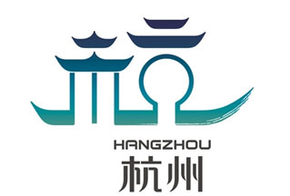

新闻公告
11月19日，杭州西湖风景名胜区管委会（市园林文物局）召开领导干部会议，传达学习贯彻党的十八大精神。西湖风景名胜区（市园文局）党委书记、管委会主任（局长）刘颖传达了十八大精神，并就名胜区（园文局）深入学习贯彻十八大精神作了部署，管委会副主任王宏伟、吕雄伟等党委班子成员、机关全体人员、各基层区（局）管干部参加会议。会议由党委副书记、副主任张鸿斌主持。
杭州介绍
 杭州市（本地吴语读音（IPA）：愂 tsei）简称杭，中国浙江省省会，副省级城市，浙江省政治、经济、文化、科教中心，长三角地区副中心城市和南翼中心城市，浙江省的金融中心和行政中心，全国重点风景旅游城市和历史文化名城，大陆国际形象最佳城市之一，中国七大古都之一。古时杭州曾称“临安”、“钱塘”、“武林”等。杭州位于浙江省北部，处杭嘉湖平原南缘，拥有约2300年的建城史，是一个典型的山水文化名城。西子湖、钱塘江、千岛湖以及周边丘陵构成了杭州的山水美景。
自古以来，杭州的经济和文化比较发达，素有“东南第一州”之称。“欲把西湖比西子，淡妆浓抹总相宜”赞美西子湖之美。活跃的多元化经济和发达的文化教育使杭州成为浙江省政治、经济和文化的中心。
产品展示
欢迎光临